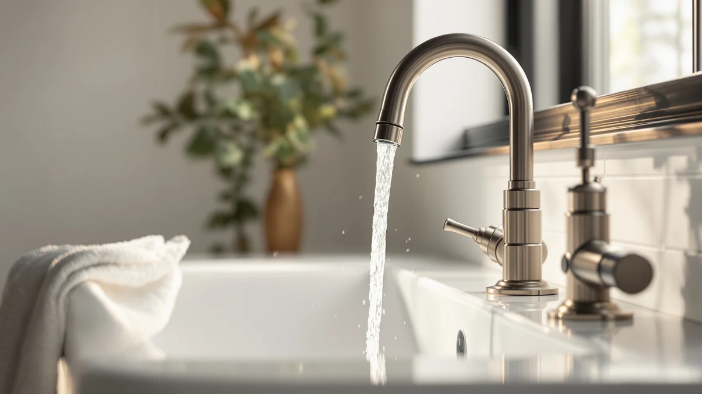

Best Faucet Valve Types (2026) | Best Bathroom Faucets
Prices and picks verified as of August 2026. Independent, reader-supported reviews.


Things to Know Before You Buy
- The valve is the part that wears out. Finish and spout style get all the attention, but the valve inside controls the water and decides whether you get a quiet decade or a drip within a year.
- Ceramic disc valves last longest. They seal hard ceramic against ceramic instead of a rubber washer, so they shrug off the hard water and friction that kill cheaper valves.
- Check the warranty before the price. A lifetime drip-free warranty is a strong sign the maker trusts its valve. Be wary of faucets that stay quiet about what is inside.
- Cartridge valves are the easy fix. When a cartridge faucet finally drips, you swap a $15 cartridge in twenty minutes instead of buying a whole new faucet.
Faucet valve types are the single biggest reason one bathroom faucet drips within a year while another runs quietly for a decade, yet almost nobody checks the valve before they buy. You compare finishes, spout heights, and handle shapes, then ignore the one part that actually controls the water. The valve is the small cartridge or disc hidden under the handle, and it does all the opening, closing, and mixing every time you turn on the tap.
You have four main designs to know: ceramic disc, cartridge, ball, and compression. Each one handles wear, hard water, and repairs differently, and the gap between the best and the worst shows up fast in a busy bathroom. Spend two minutes learning the differences and you avoid the most common faucet regret, which is paying for a good-looking fixture that fails at the only job that matters.
Below you will find what each valve does, how to match one to your bathroom, and the mistakes that send people back to the store. You will also see three faucets we like, each built around a valve that holds up. By the end you can read a product listing and know in seconds whether the faucet behind the pretty photo will last.
What You Need to Know
The valve is the one moving part of the faucet, and everything else is housing built around it. Every time you lift or turn the handle, the valve opens a path for water, mixes hot and cold, and seals shut again. A faucet might run that cycle twenty or thirty times a day, so the valve takes more abuse than any other part you own in the bathroom.
Older designs sealed water with a rubber washer pressed against a metal seat. That washer wears down, hardens, and eventually lets water seep past, which is the slow drip you hear at night. Modern valves replaced the washer with two polished ceramic discs that slide across each other. Ceramic barely wears and resists the mineral grit in hard water, so a good ceramic valve can run for years without a single drip.
The valve also decides how you fix a leak. Cartridge and ceramic-disc faucets let you pull out one part and drop in a fresh one for around $15, while older ball and compression designs need fiddly washers and seats that few people enjoy replacing. When you read a faucet listing, look past the photo and find the line that names the valve. If the brand hides it, that tells you something too.
Types and Categories
The four faucet valve types you will meet cover almost every fixture on the shelf, and each suits a different budget and tolerance for future repairs.
Ceramic disc valves sit at the top. Two ceramic discs seal against each other, which gives you smooth handle action and the best resistance to dripping and hard water. Most quality single-handle faucets today use this design, and it is the one to favor if you want to install a faucet and forget about it.
Cartridge valves use a removable cylinder that moves up and down or rotates to control flow. They work in both single and double-handle faucets, feel smooth, and are the easiest to repair: pull the old cartridge, push in a new one, done. Many cartridges now use ceramic internals, which blurs the line between the two top categories.
Ball valves use a slotted metal ball to mix hot and cold, and you find them in older single-handle kitchen and bathroom faucets. They work, but the many small parts inside mean more spots that can leak over time.
Compression valves are the oldest design, using a rubber washer screwed down against a seat. They show up on budget two-handle faucets and cost little to buy, but they drip the soonest and need washer replacements you will repeat. Among these faucet valve types, compression is the one to avoid unless price is your only concern.
How to Choose
Your choice comes down to how long you want the faucet to last and how much repair work you are willing to do. Start with the valve, then let finish and style follow.
For most bathrooms, pick a faucet with a ceramic-disc valve. You get quiet, drip-free operation for years and strong resistance to the mineral buildup that ruins lesser valves. If you live with hard water, treat this as non-negotiable, because hard water is what grinds rubber washers and loose ball parts into early failures.
If you rent, flip houses, or simply want easy repairs, a cartridge valve is the smart middle ground. When it eventually wears, you replace a single cartridge in about twenty minutes with no plumber and no new faucet. Buy from a brand that still stocks parts, since an orphaned cartridge defeats the whole point.
Use the warranty as a shortcut. A maker that offers a lifetime drip-and-stain-free warranty is telling you the valve can back that promise, and Moen, Delta, and Pfister all do this on their better lines. A vague or short warranty usually means a cheaper valve inside. Match the handle setup to the job too: a single handle with a ceramic disc gives you one-hand temperature control, while two handles each ride on their own valve.
Skip ball and compression valves unless budget rules everything. They cost less today and cost you more in drips, washers, and weekends spent under the sink. Among the faucet valve types on the shelf, the cheapest one rarely stays the cheapest once you count the repairs.
Common Mistakes to Avoid
The most common mistake with faucet valve types is ignoring the valve entirely and buying on looks. A brushed-nickel finish you love means little if the valve under it starts dripping in eight months, so read the spec line before you fall for the photo.
People also buy off-brand faucets with no named valve to save twenty dollars. You save that twenty once, then spend it again on a replacement faucet when no repair parts exist. Stick to brands that publish what their valve is and sell the cartridge separately.
Another trap is matching the wrong valve to hard water. If your area has heavy mineral content and you install a compression or ball faucet, you invite scale buildup that locks up parts and forces a drip. Choose a ceramic disc and you sidestep the whole problem.
Many buyers forget to shut off the water before opening a valve to fix it, which turns a quick cartridge swap into a soaked vanity. Close the supply stops under the sink first, then work. And do not over-tighten a handle to stop a drip, because that crushes the valve seal and makes the leak worse, when the real fix is a fresh cartridge or disc.
Care and Maintenance
A good valve rewards a little upkeep with years of quiet service. The valve itself asks for almost nothing, but the water flowing through it leaves deposits you can manage.
Wipe the faucet dry after heavy use to keep hard-water spots off the finish and away from the handle base, where grit can creep toward the valve. Once or twice a year, unscrew the aerator at the spout tip and soak it in white vinegar to clear mineral buildup. A clogged aerator drops your flow and tempts you to crank the handle harder, which strains the valve.
If you notice a slow drip, act early. On a cartridge or ceramic-disc faucet, shut off the supply stops, pull the handle, and replace the cartridge with the matching part from the brand. The job runs about $15 and twenty minutes, and it restores the faucet rather than masking the leak.
Run a handle through its full range now and then so the valve does not stiffen from sitting in one position. For hard-water homes, a softener protects every valve in the house, not just this faucet. Treat the valve well and a quality faucet outlasts two or three cheap ones bought to replace it.
Our Top Picks
You do not have to take valve quality on faith. These three faucets each run on a ceramic-style valve from a brand that backs it, and they cover the range from everyday value to a polished upgrade. Prices were accurate as of June 2026 and shift with Amazon stock.

Editor’s Pick
Moen Ronan Spot Resist Brushed
The Moen Ronan pairs a smooth ceramic-disc valve with Spot Resist brushed nickel that hides fingerprints, and Moen's lifetime drip-free warranty stands behind the valve. Buy it when you want to install once and stop thinking about it.
$110.60
Check Price on Amazon
Best Value
Pfister Parisa Single Handle Bathroom
At around $61, the Pfister Parisa proves a reliable valve does not need a premium price. Its single ceramic-disc handle gives easy one-hand temperature control, and Pfister's Pforever warranty covers the valve, which is rare at this cost.
$61.31
Check Price on Amazon
Premium Choice
Delta Arvo Centerset Bathroom Faucet
The Delta Arvo puts a crisp, modern centerset look on top of Delta's DIAMOND Seal ceramic valve, which is built to resist wear and the leaks that come with hard water. Delta backs it with a lifetime warranty, so the clean styling comes with a valve that earns it.
$88.73
Check Price on AmazonWhich faucet valve type lasts the longest?
Ceramic-disc valves last the longest.
How do I tell which valve type a faucet uses?
Read the product specs or description, where quality brands name the valve directly, often as a ceramic-disc or cartridge valve.
Frequently Asked Questions
Which faucet valve type lasts the longest?
How do I tell which valve type a faucet uses?
Can I replace a faucet valve myself?
Are ceramic-disc valves worth the extra cost?
Why does my faucet drip even though it is new?
Verdict
Once you understand faucet valve types, the buying decision gets simple. The valve is the part that controls the water and the part that fails, so it deserves more attention than the finish or the spout shape. For most bathrooms a ceramic-disc valve is the right call, giving you quiet, drip-free use for years and real resistance to hard water, while a cartridge valve wins if you want a twenty-minute repair down the road. Skip ball and compression valves unless price is your only limit, because the savings disappear into future drips and washers. Of our three picks, the Moen Ronan is the one we would install in our own bathroom: it pairs a proven ceramic-disc valve with a lifetime drip-free warranty and a finish that hides fingerprints. The Pfister Parisa covers tighter budgets and the Delta Arvo handles upgrades, but all three share what counts, a quality valve from a brand that stands behind it. Match the valve to your water and your patience, and the faucet takes care of the rest.